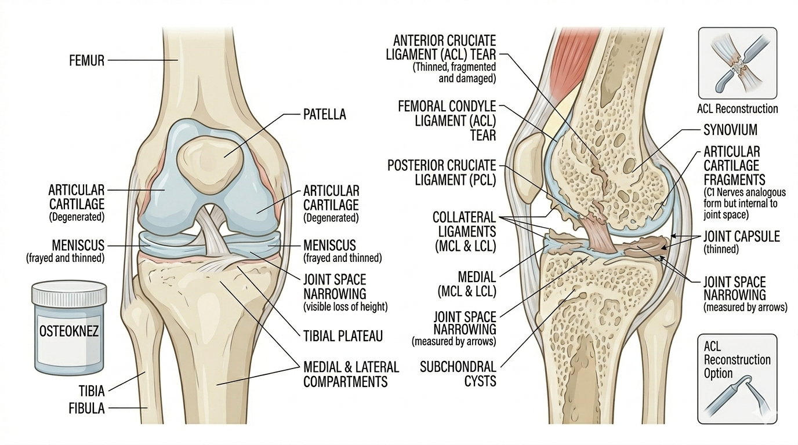

ACL Injury Assessment

Quick Definitions
ACL Injury: A tear or sprain of the anterior cruciate ligament causing instability of the knee joint.
Patient Profile
Young athletes, sports injury (football, basketball)
Subjective Assessment
- Sudden knee injury
- “Pop” sound at time of injury
- Swelling within hours
- Instability (giving way)
Objective Assessment
- Swelling (effusion)
- ROM limitation
- Joint instability
- Gait disturbance
Special Tests 🔥
- Lachman Test (most sensitive)
- Anterior Drawer Test
- Pivot Shift Test
Step-wise Clinical Assessment
- History taking (mechanism of injury)
- Observation (swelling)
- Palpation
- ROM assessment
- Perform special tests
- Assess instability
- Clinical reasoning
Clinical Reasoning
Pop sound + swelling → ligament injury
Positive Lachman → ACL tear
Instability → ligament deficiency
Clinical Decision Flow
Knee injury → Check mechanism
↓
Twisting injury → ligament involvement
↓
Perform Lachman test
↓
Positive → ACL injury
Differential Diagnosis
- ACL injury
- Meniscus injury
- Collateral ligament injury
Red Flags 🚨
- Severe swelling immediately after injury
- Inability to bear weight
- Associated fracture suspicion
- Neurovascular compromise
Viva Questions
- What is ACL?
- Most sensitive test for ACL?
- Mechanism of injury?
Key Points 📌
- Lachman test is gold standard
- Common in sports injuries
- Instability is key feature
Common Mistakes ⚠️
- Skipping special tests
- Confusing with meniscus injury
Comparison 🔍
| Condition |
Main Feature |
| ACL Injury |
Instability (giving way) |
| Meniscus Injury |
Locking of knee |
| Osteoarthritis |
Crepitus + chronic pain |
Case Example 🧾
22-year-old football player presented with knee injury after sudden twisting.
He reported a pop sound, swelling within few hours,
and feeling of instability. Clinical tests showed
positive Lachman test, indicating ACL injury.
Clinical Pearls 💡
- Lachman test is more sensitive than anterior drawer
- Pop sound at injury strongly suggests ACL tear
- Early swelling indicates ligament injury
Quick Revision ⚡
ACL → Instability
Pop sound → Ligament tear
Lachman Test → Most sensitive
Swelling → Acute injury
References 📚
- David J. Magee – Orthopedic Physical Assessment
- Kendall – Muscles: Testing and Function
- Kisner & Colby – Therapeutic Exercise
- Brukner & Khan – Clinical Sports Medicine
⬅ Back to Home